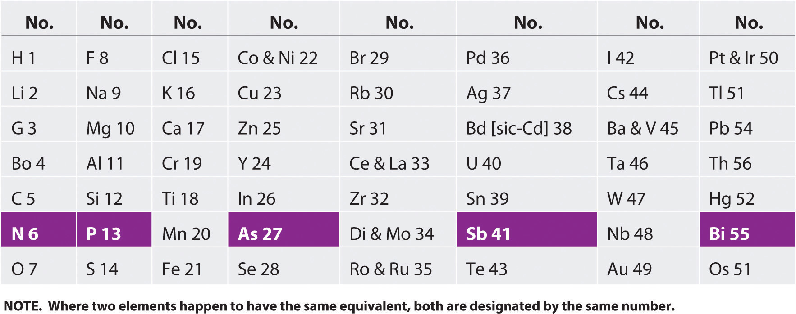
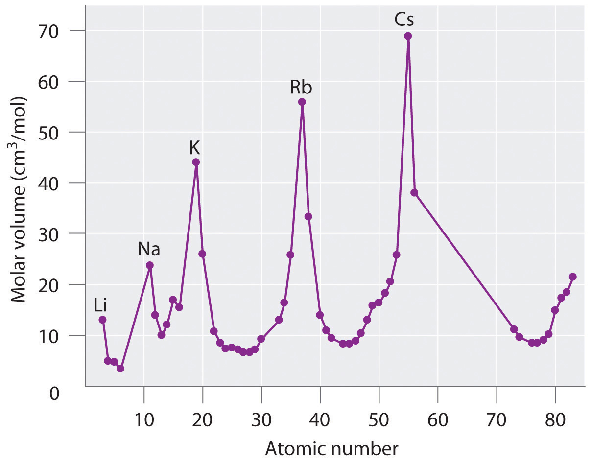

The modern periodic table has evolved through a long history of attempts by chemists to arrange the elements according to their properties as an aid in predicting chemical behavior. One of the first to suggest such an arrangement was the German chemist Johannes Dobereiner (1780–1849), who noticed that many of the known elements could be grouped in triadsA set of three elements that have similar properties., sets of three elements that have similar properties—for example, chlorine, bromine, and iodine; or copper, silver, and gold. Dobereiner proposed that all elements could be grouped in such triads, but subsequent attempts to expand his concept were unsuccessful. We now know that portions of the periodic table—the d block in particular—contain triads of elements with substantial similarities. The middle three members of most of the other columns, such as sulfur, selenium, and tellurium in group 16 or aluminum, gallium, and indium in group 13, also have remarkably similar chemistry.
By the mid-19th century, the atomic masses of many of the elements had been determined. The English chemist John Newlands (1838–1898), hypothesizing that the chemistry of the elements might be related to their masses, arranged the known elements in order of increasing atomic mass and discovered that every seventh element had similar properties (Figure 7.1 "The Arrangement of the Elements into Octaves as Proposed by Newlands"). (The noble gases were still unknown.) Newlands therefore suggested that the elements could be classified into octavesA group of seven elements, corresponding to the horizontal rows in the main group elements (not counting the noble gases, which were unknown at the time)., corresponding to the horizontal rows in the main group elements. Unfortunately, Newlands’s “law of octaves” did not seem to work for elements heavier than calcium, and his idea was publicly ridiculed. At one scientific meeting, Newlands was asked why he didn’t arrange the elements in alphabetical order instead of by atomic mass, since that would make just as much sense! Actually, Newlands was on the right track—with only a few exceptions, atomic mass does increase with atomic number, and similar properties occur every time a set of ns2np6 subshells is filled. Despite the fact that Newlands’s table had no logical place for the d-block elements, he was honored for his idea by the Royal Society of London in 1887.
Newlands noticed that elemental properties repeated every seventh (or multiple of seven) element, as musical notes repeat every eighth note.
Figure 7.1 The Arrangement of the Elements into Octaves as Proposed by Newlands
The table shown here accompanied a letter from a 27-year-old Newlands to the editor of the journal Chemical News in which he wrote: “If the elements are arranged in the order of their equivalents, with a few slight transpositions, as in the accompanying table, it will be observed that elements belonging to the same group usually appear on the same horizontal line. It will also be seen that the numbers of analogous elements generally differ either by 7 or by some multiple of seven; in other words, members of the same group stand to each other in the same relation as the extremities of one or more octaves in music. Thus, in the nitrogen group, between nitrogen and phosphorus there are 7 elements; between phosphorus and arsenic, 14; between arsenic and antimony, 14; and lastly, between antimony and bismuth, 14 also. This peculiar relationship I propose to provisionally term the Law of Octaves. I am, &c. John A. R. Newlands, F.C.S. Laboratory, 19, Great St. Helen’s, E.C., August 8, 1865.”
The periodic table achieved its modern form through the work of the German chemist Julius Lothar Meyer (1830–1895) and the Russian chemist Dimitri Mendeleev (1834–1907), both of whom focused on the relationships between atomic mass and various physical and chemical properties. In 1869, they independently proposed essentially identical arrangements of the elements. Meyer aligned the elements in his table according to periodic variations in simple atomic properties, such as “atomic volume” (Figure 7.2 "Variation of Atomic Volume with Atomic Number, Adapted from Meyer’s Plot of 1870"), which he obtained by dividing the atomic mass (molar mass) in grams per mole by the density of the element in grams per cubic centimeter. This property is equivalent to what is today defined as molar volumeThe molar mass of an element divided by its density. (measured in cubic centimeters per mole):
Equation 7.1
As shown in Figure 7.2 "Variation of Atomic Volume with Atomic Number, Adapted from Meyer’s Plot of 1870", the alkali metals have the highest molar volumes of the solid elements. In Meyer’s plot of atomic volume versus atomic mass, the nonmetals occur on the rising portion of the graph, and metals occur at the peaks, in the valleys, and on the downslopes.
When his family’s glass factory was destroyed by fire, Mendeleev moved to St. Petersburg, Russia, to study science. He became ill and was not expected to recover, but he finished his PhD with the help of his professors and fellow students. In addition to the periodic table, another of Mendeleev’s contributions to science was an outstanding textbook, The Principles of Chemistry, which was used for many years.
Figure 7.2 Variation of Atomic Volume with Atomic Number, Adapted from Meyer’s Plot of 1870
Note the periodic increase and decrease in atomic volume. Because the noble gases had not yet been discovered at the time this graph was formulated, the peaks correspond to the alkali metals (group 1).
Mendeleev, who first published his periodic table in 1869 (Figure 7.3 "Mendeleev’s Periodic Table, as Published in the German Journal "), is usually credited with the origin of the modern periodic table. The key difference between his arrangement of the elements and that of Meyer and others is that Mendeleev did not assume that all the elements had been discovered (actually, only about two-thirds of the naturally occurring elements were known at the time). Instead, he deliberately left blanks in his table at atomic masses 44, 68, 72, and 100, in the expectation that elements with those atomic masses would be discovered. Those blanks correspond to the elements we now know as scandium, gallium, germanium, and technetium.
Figure 7.3 Mendeleev’s Periodic Table, as Published in the German Journal Annalen der Chemie und Pharmacie in 1872

The column headings “Reihen” and “Gruppe” are German for “row” and “group.” Formulas indicate the type of compounds formed by each group, with “R” standing for “any element” and superscripts used where we now use subscripts. Atomic masses are shown after equal signs and increase across each row from left to right.
The most convincing evidence in support of Mendeleev’s arrangement of the elements was the discovery of two previously unknown elements whose properties closely corresponded with his predictions (Table 7.1 "Comparison of the Properties Predicted by Mendeleev in 1869 for "). Two of the blanks Mendeleev had left in his original table were below aluminum and silicon, awaiting the discovery of two as-yet-unknown elements, eka-aluminum and eka-silicon (from the Sanskrit eka, meaning “one,” as in “one beyond aluminum”). The observed properties of gallium and germanium matched those of eka-aluminum and eka-silicon so well that once they were discovered, Mendeleev’s periodic table rapidly gained acceptance.
Table 7.1 Comparison of the Properties Predicted by Mendeleev in 1869 for eka-Aluminum and eka-Silicon with the Properties of Gallium (Discovered in 1875) and Germanium (Discovered in 1886)
| Property | eka-Aluminum (predicted) | Gallium (observed) | eka-Silicon (predicted) | Germanium (observed) |
|---|---|---|---|---|
| atomic mass | 68 | 69.723 | 72 | 72.64 |
| element | metal | metal | dirty-gray metal | gray-white metal |
| low mp* | mp = 29.8°C | high mp | mp = 938°C | |
| d = 5.9 g/cm3 | d = 5.91 g/cm3 | d = 5.5 g/cm3 | d = 5.323 g/cm3 | |
| oxide | E2O3 | Ga2O3 | EO2 | GeO2 |
| d = 5.5 g/cm3 | d = 6.0 g/cm3 | d = 4.7 g/cm3 | d = 4.25 g/cm3 | |
| chloride | ECl3 | GaCl3 | ECl4 | GeCl4 |
| volatile |
mp = 78°C bp* = 201°C |
bp < 100°C | bp = 87°C | |
| *mp = melting point; bp = boiling point. | ||||
When the chemical properties of an element suggested that it might have been assigned the wrong place in earlier tables, Mendeleev carefully reexamined its atomic mass. He discovered, for example, that the atomic masses previously reported for beryllium, indium, and uranium were incorrect. The atomic mass of indium had originally been reported as 75.6, based on an assumed stoichiometry of InO for its oxide. If this atomic mass were correct, then indium would have to be placed in the middle of the nonmetals, between arsenic (atomic mass 75) and selenium (atomic mass 78). Because elemental indium is a silvery-white metal, however, Mendeleev postulated that the stoichiometry of its oxide was really In2O3 rather than InO. This would mean that indium’s atomic mass was actually 113, placing the element between two other metals, cadmium and tin.
One group of elements that is absent from Mendeleev’s table is the noble gases, all of which were discovered more than 20 years later, between 1894 and 1898, by Sir William Ramsay (1852–1916; Nobel Prize in Chemistry 1904). Initially, Ramsay did not know where to place these elements in the periodic table. Argon, the first to be discovered, had an atomic mass of 40. This was greater than chlorine’s and comparable to that of potassium, so Ramsay, using the same kind of reasoning as Mendeleev, decided to place the noble gases between the halogens and the alkali metals.
Despite its usefulness, Mendeleev’s periodic table was based entirely on empirical observation supported by very little understanding. It was not until 1913, when a young British physicist, H. G. J. Moseley (1887–1915), while analyzing the frequencies of x-rays emitted by the elements, discovered that the underlying foundation of the order of the elements was by the atomic number, not the atomic mass. Moseley hypothesized that the placement of each element in his series corresponded to its atomic number Z, which is the number of positive charges (protons) in its nucleus. Argon, for example, although having an atomic mass greater than that of potassium (39.9 amu versus 39.1 amu, respectively), was placed before potassium in the periodic table. While analyzing the frequencies of the emitted x-rays, Moseley noticed that the atomic number of argon is 18, whereas that of potassium is 19, which indicated that they were indeed placed correctly. Moseley also noticed three gaps in his table of x-ray frequencies, so he predicted the existence of three unknown elements: technetium (Z = 43), discovered in 1937; promethium (Z = 61), discovered in 1945; and rhenium (Z = 75), discovered in 1925.
Moseley left his research work at the University of Oxford to join the British army as a telecommunications officer during World War I. He was killed during the Battle of Gallipoli in Turkey.
Before its discovery in 1999, some theoreticians believed that an element with a Z of 114 existed in nature. Use Mendeleev’s reasoning to name element 114 as eka-______; then identify the known element whose chemistry you predict would be most similar to that of element 114.
Given: atomic number
Asked for: name using prefix eka-
Strategy:
A Using the periodic table (see Chapter 32 "Appendix H: Periodic Table of Elements"), locate the n = 7 row. Identify the location of the unknown element with Z = 114; then identify the known element that is directly above this location.
B Name the unknown element by using the prefix eka- before the name of the known element.
Solution:
A The n = 7 row can be filled in by assuming the existence of elements with atomic numbers greater than 112, which is underneath mercury (Hg). Counting three boxes to the right gives element 114, which lies directly below lead (Pb). B If Mendeleev were alive today, he would call element 114 eka-lead.
Exercise
Use Mendeleev’s reasoning to name element 112 as eka-______; then identify the known element whose chemistry you predict would be most similar to that of element 112.
Answer: eka-mercury
The periodic table arranges the elements according to their electron configurations, such that elements in the same column have the same valence electron configurations. Periodic variations in size and chemical properties are important factors in dictating the types of chemical reactions the elements undergo and the kinds of chemical compounds they form. The modern periodic table was based on empirical correlations of properties such as atomic mass; early models using limited data noted the existence of triads and octaves of elements with similar properties. The periodic table achieved its current form through the work of Dimitri Mendeleev and Julius Lothar Meyer, who both focused on the relationship between atomic mass and chemical properties. Meyer arranged the elements by their atomic volume, which today is equivalent to the molar volume, defined as molar mass divided by molar density. The correlation with the electronic structure of atoms was made when H. G. J. Moseley showed that the periodic arrangement of the elements was determined by atomic number, not atomic mass.
Johannes Dobereiner is credited with developing the concept of chemical triads. Which of the group 15 elements would you expect to compose a triad? Would you expect B, Al, and Ga to act as a triad? Justify your answers.
Despite the fact that Dobereiner, Newlands, Meyer, and Mendeleev all contributed to the development of the modern periodic table, Mendeleev is credited with its origin. Why was Mendeleev’s periodic table accepted so rapidly?
How did Moseley’s contribution to the development of the periodic table explain the location of the noble gases?
The eka- naming scheme devised by Mendeleev was used to describe undiscovered elements.
Based on the data given, complete the table.
| Species | Molar Mass (g/mol) | Density (g/cm3) | Molar Volume (cm3/mol) |
|---|---|---|---|
| A | 40.078 | 25.85 | |
| B | 39.09 | 0.856 | |
| C | 32.065 | 16.35 | |
| D | 1.823 | 16.98 | |
| E | 26.98 | 9.992 | |
| F | 22.98 | 0.968 |
Plot molar volume versus molar mass for these substances. According to Meyer, which would be considered metals and which would be considered nonmetals?
| Species | Molar Mass (g/mol) | Density (g/cm3) | Molar Volume (cm3/mol) |
|---|---|---|---|
| A | 40.078 | 1.550 | 25.85 |
| B | 39.09 | 0.856 | 45.67 |
| C | 32.065 | 1.961 | 16.35 |
| D | 30.95 | 1.823 | 16.98 |
| E | 26.98 | 2.700 | 9.992 |
| F | 22.98 | 0.968 | 23.7 |
Meyer found that the alkali metals had the highest molar volumes, and that molar volumes decreased steadily with increasing atomic mass, then leveled off, and finally rose again. The elements located on the rising portion of a plot of molar volume versus molar mass were typically nonmetals. If we look at the plot of the data in the table, we can immediately identify those elements with the largest molar volumes (A, B, F) as metals located on the left side of the periodic table. The element with the smallest molar volume (E) is aluminum. The plot shows that the subsequent elements (C, D) have molar volumes that are larger than that of E, but smaller than those of A and B. Thus, C and D are most likely to be nonmetals (which is the case: C = sulfur, D = phosphorus).